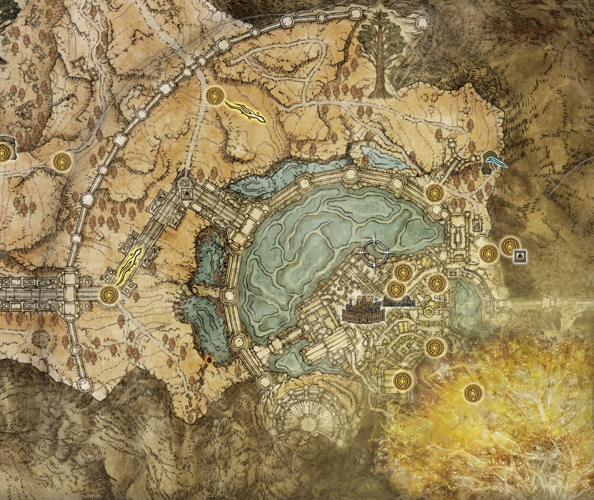
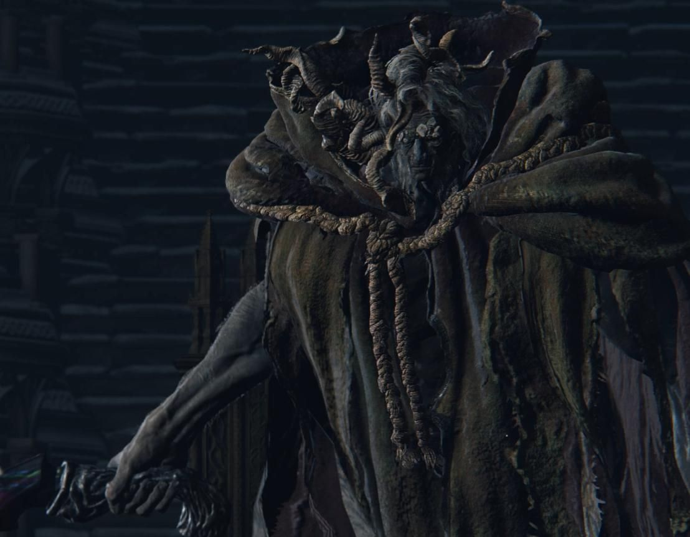

| 返回地图 | 王城罗德尔 | 区域介绍 |
|---|---|---|
|  | 这里是艾尔登法环继承者之地，也是各位褪色者们的目标。如果按照语义翻译，Leyndell 的冰岛语是秘密的意思，可以翻译成「秘密之都」或是其它更信达雅的名字，但音译的罗德尔则会让人误以为这是城市的原名。 王城的建筑风格最为壮阔，是多建筑群搭建而起的。这栋建筑既有拜占庭风格也有古罗马风格。其中有罗马柱、科林斯柱、华丽的浮雕还有恢弘的拱门。其细部装饰风格多变，庭院楼梯宽阔大气，建筑的配色也多为白色与黄色调，这些无不体现着王城的高贵与典雅。有理由猜测，这栋建筑最初便计划取材西方各种最为神圣古典的建筑设计而成。 | |
| 区域头目 | 头目介绍 | |
|  | 是葛孚雷与玛丽卡之子，因出生就带有畸角被视为恶兆与栾生弟弟蒙格一起丢到下水道，蒙葛特与蒙格从小就生活在下水道，直到破碎战争兄弟二人才离开下水道，但蒙葛特并没有选择离开，他甘愿作为黄金树的守卫保护黄金树。 | |